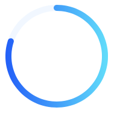

canvas怎么绘制环形进度条
这篇文章发布于 2020/07/12，归类于 Javascript
标签：
canvas绘制环形进度条，js画环形渐变进度条，canvas画进度条
使用canvas绘制渐变的环形进度条，主要是使用arc函数，下面来看看
4个重点
怎么画圆弧, ctx.arc函数里开始角度、结束角度以PI为基准，取值范围时：0 ~ 2PI，PI就是π值约等于3.14，圆心正上方位置为1.5PI，圆心右侧为 0 或 2*PI，圆心正下方为0.5PI，选定义额开始位置和结束位置就可以绘制任意一个弧形，详情参见: 之前的canvas笔记 - 绘制路径
画圆环使用的是ctx.stroke，一般默认画圆大概是1px的宽度，线的宽度可以使用 ctx.lineWidth 调整，这样就成圆环了
用ctx.arc画一个完整的圆，再画一个进度圆弧，重叠在一起，颜色设置不一样，就是一个标准的圆环进度条了。
进度圆环怎么设置圆角，可以使用 ctx.lineCap = "round";
关于retina两倍屏，需要注意乘以设备像素比，参见：canvas绘制模糊的问题

简单代码实现
完整demo可以参见github：渐变环形进度条 | github
<canvas id="drawing" width="180" height="180" >A draw of something.</canvas>
<script>
let drawing = document.getElementById('drawing');
let ctx = drawing.getContext('2d');
let percent = 80 // 进度百分比
let circleRadios = 80 // 圆环半径
let lineWidth = 10
let PI = 3.1415926
let long = (percent / 100) * PI * 2 // 百分比进度条长度
let start = 1.5 * PI // 圆心正上方位置是 1.5PI
ctx.lineWidth = lineWidth
// 背景圆环
let x = circleRadios + lineWidth
let y = x
ctx.beginPath()
ctx.strokeStyle = 'rgb(241,247,255)'
ctx.arc(x, y, circleRadios, start + long, start)
ctx.stroke()
// 进度圆环
ctx.beginPath()
let gradient = ctx.createLinearGradient(circleRadios * 2 + lineWidth * 2, lineWidth + circleRadios, 0 , circleRadios + lineWidth); // 从(130,130)到(160,160)渐变
gradient.addColorStop(0, '#64E1FA'); // 渐变的起点色
gradient.addColorStop(1, '#215BF7'); // 渐变的结束色
ctx.strokeStyle = gradient
ctx.arc(x, y, circleRadios, start, start + long)
ctx.lineCap = "round";
ctx.stroke()
</script>